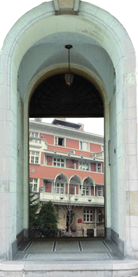

Фондација развија основна начела људске солидарности, хуманости и племенитости и у том циљу подстиче и награђује стваралаштво даровитих уметника и студената позоришне, филмске и других сродних уметности.

„Дан Отворених врата“ је активност разматрања и расправе о садржајним питањима из појединих области драмске уметности, која су најчешће инспирисана и ослоњена на културно наслеђе Ружице Сокић, легатима и архивама Југословенске кинотеке, као и на друге научне подлоге. Дан Отворених врата је догађај који се организује једном месечно, у току позоришне сезоне, као мањи скуп професионалних лица на челу са предавачем –модератором. Присутни саслушају предавање модератора, а затим разматрају тему у форми салона, или када је сесија студената – у форми радионице. Предавања и дискусије се тонски снимају и материлаји приређују за употребу. Намера је да већина материјала буде коришћена као допуна стручног образовања студената.Пројекат је заживео у 2019. год. и делом је финасиран од стране Министарства за културу и информисање Р. Србије. До краја јуна остварена су три врло успешна сусрета „Дан Отворених врата“, чији су модератори били: проф.др Небојша Ромчевић („Професија SHОWRUNNER“), проф. Јелена Перић ( „Почетак театра у Срба у 19. веку“) и наша позната глумица и председница Управног одбора Фондације, Весна Станковић („Шта после Академије“).
Прва сесија је одржана 19. маја 2019. године, предавач-модератор је била Весна Станковић, тема дана: „Шта после Академије“


Весна Станковић, дугогодишња чланица Југословенског драмског позоришта је младим глумцима дала неке директне и корисне савете о томе, на који начин да сами пројектују своју глумачку каријеру. Поуке упућене младим глумцима примане су са великом радозналошћу и биле су пропраћене бројним питањима и исказима мишљења. Посебно, Весна је нагласила следеће: “Ви сте одлучили да се бавите овом професијом, да се бавите глумом, и премда многи верују да је најтеже уписати студије глуме, прави проблеми заправо почињу онда када кренете да крчите себи пут након студија. Суштинско питање тада је: шта после студија? Свако од вас претендује на улогу а све је више студената глуме!“ Такође, медијатор је учесницима скупа предложила више професионалних могућноисти за самостално обезбеђивање рада, као и прихода за живот. Нагласила је:”Пре свега, морамо много и стално да радимо на себи, да се усавршавамо.” Већина присутних слушалаца узела је активно учешће у дискусији и питањима, својим искуствима и недоумицама.
Друга сесија је одржана 26. маја 2019. године, предавач-модератор био је проф. др Небојша Ромчевић, тема дана: „Професија SHОWRUNNER“.


Као човек који је у свом креативном бићу успешно спојио бављење теоријским радом у области театрологије, али и бављење практичним аспектима представљачких уметности, професор Ромчевић је одржао предавање, код нас још увек недовољно познатој професији “шоуранера”. Она се у номенклатури нових занимања и у терминологији телевизијске продукције и индустрије западних земаља појављује као професија која обједињује улогу писца, односно аутора, уредника скрипта и извршног продуцента. Овом занимљивом и информативном предавању присуствовали су бројни слушаоци - колеге Небојше Ромчевића, некадашњи студенти Факултета драмских уметности и људи са интересовањима из области културе.
Трећа сесија је одржана 16. јуна 2019. године, модератор је била проф. Јелена Перић, тема дана: „Почетак театра у Срба у 19. веку“.


Предавање о овој, јавности недовољно познатој теми, почецима позоришног живота у Србији – било је прожето занимљивим и необичним подацима, детаљима, примерима и анегдотама, које су га учиниле интересантним и динамичним.
Отварање позоришних сцена у Србији у 19 веку, затим пораст драмских дела , наслови представа, ствараоци улога критика и друго, чине склоп важне културне баштине. Путем историјских приказа ових категорија, освежавају се драгоцена искуства која су и данас актуелна за савремени театарски живот у Србији. Десетак респектабилних учесника скупа, високо квалификованих стручњака, својом расправом су то потврдили доста жустро.